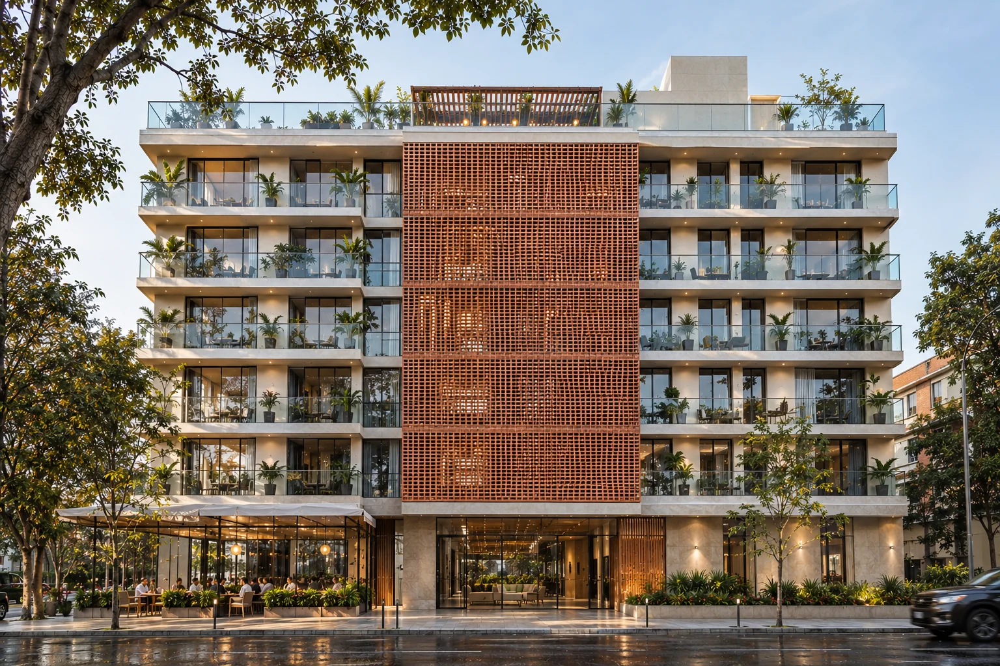
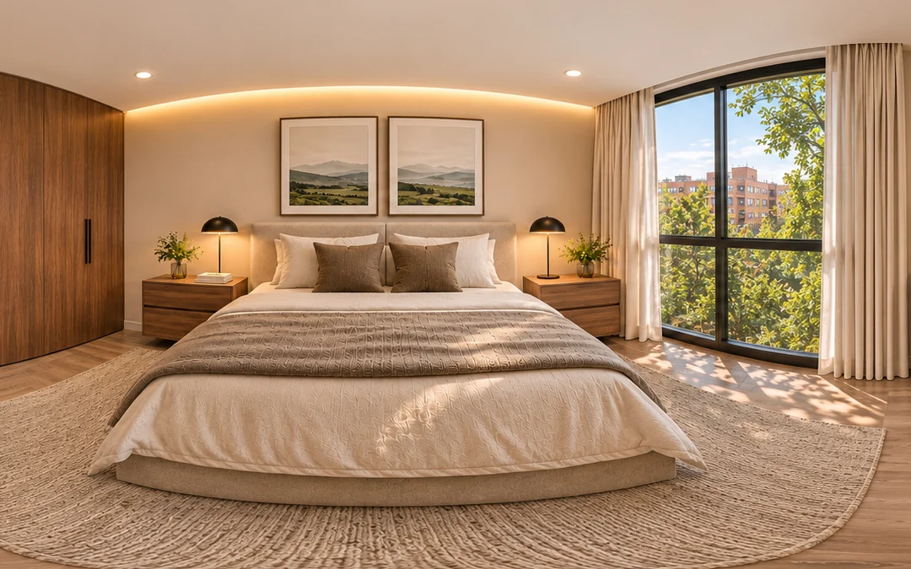
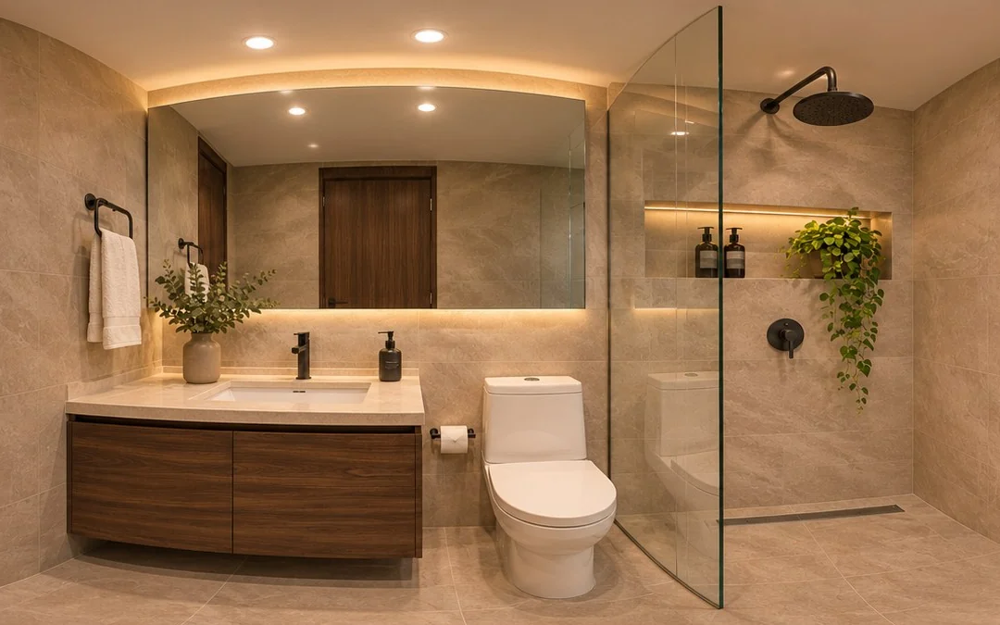
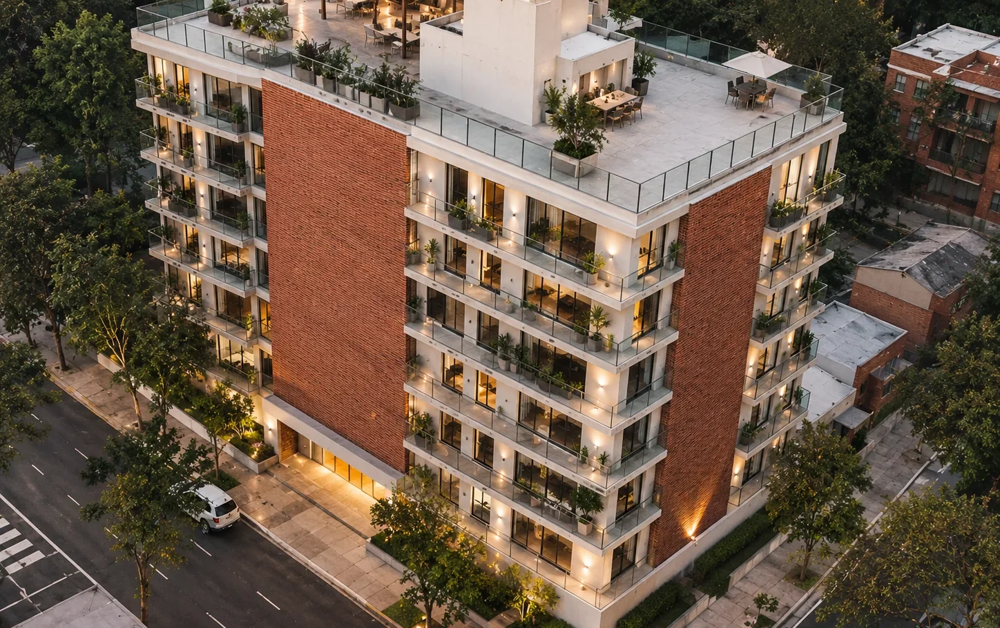
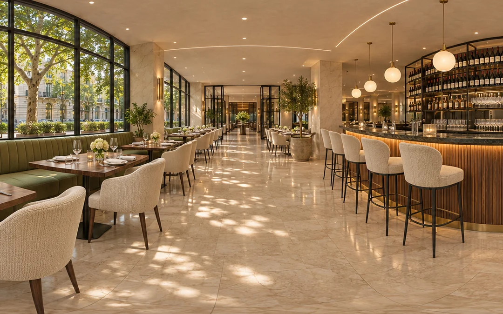

Primer piso
Un lobby de vidrio y piedra
Recepción en piedra con listones de madera, piso de mármol beige, plantas grandes y un ventanal sobre los árboles de la calle.

Galerías, Teusaquillo
20 apartamentos con balcón de 70 y 78,75 m², desde $630.000.000, entre los árboles de la Calle 56 con Carrera 18.
Primer piso
Recepción en piedra con listones de madera, piso de mármol beige, plantas grandes y un ventanal sobre los árboles de la calle.
Primer piso
Junto a la recepción, una sala para recibir visitas frente al jardín, y al fondo el punto fijo con ascensor y escalera.
Pisos 2 a 6
41 m² abiertos al balcón con ventanales de piso a techo, cocina con isla de piedra y biblioteca de nogal.
Apartamento tipo A, 78,75 m²
Cocina abierta con isla, madera clara en el piso y porcelanato en baños y pasillo. Ropas y depósito dentro del apartamento.
Fachada
Baranda de vidrio para que desde la calle se vean las plantas, y la celosía de ladrillo calado que da sombra al centro de la fachada.
Cubierta
Pérgola de madera, zona BBQ, café lounge y gimnasio al aire libre para todos los vecinos.
Corte longitudinal
El edificio cortado a lo largo de la Calle 56. Pasa por cada nivel para ver qué espacios tiene.
Interiores


8:24 a. m.
Los apartamentos de esquina abren a dos calles: la luz y el aire cruzan la sala y la luz eléctrica queda para la noche.
12:24 p. m.
Dos franjas de ladrillo calado dan sombra al mediodía y dejan pasar la brisa. Es ladrillo de la sabana, que dura décadas sin pintura.
4:24 p. m.
La luz de la tarde entra por el ventanal del balcón hasta la isla de mármol, entre los muebles de nogal y el comedor.

5:51 p. m.
Bicicletero en el primer piso, la troncal NQS a pocas cuadras y rutas del SITP por las calles 53 y 57. Adentro, luz LED cálida.
Pañete blanco con dos franjas de ladrillo calado que marcan la esquina. Los balcones salen sobre la calle con baranda de vidrio, para que desde afuera se vean las plantas y no los barrotes.
Sobre la Calle 56, frente a la parroquia. Los esquineros tienen dos fachadas.
$708.750.000
| Sala, comedor y cocina | 41,0 m² |
|---|---|
| Alcoba principal con baño | 16,1 m² |
| Alcoba 2 | 10,5 m² |
| Baño social | 4,9 m² |
| Ropas y depósito | 6,7 m² |
| Área total con muros y balcón | 78,75 m² |
Hacia el jardín del patio, del lado más silencioso.
$630.000.000
| Sala, comedor y cocina | 40,0 m² |
|---|---|
| Alcoba principal con baño | 10,8 m² |
| Alcoba 2 | 7,9 m² |
| Baño social | 2,9 m² |
| Ropas y depósito | 3,9 m² |
| Área total con muros y balcón | 70,00 m² |

Cabida arquitectónica
Fuentes: Catastro Bogotá (lote), POT de Bogotá, Decreto 555 de 2021 (antejardín, aislamiento posterior de 3,00 m y equipamiento comunal) y modelo de Revit del proyecto (huella, alturas y áreas).

Galerías, Teusaquillo
Calle 56 con Carrera 18, frente a la Parroquia Divino Salvador. Toca un lugar de la lista para verlo en el mapa, con la línea desde el edificio.
Distancias en línea recta desde el lote. Los minutos son aproximados: recorrido 30 % más largo que la línea recta, a 80 m por minuto a pie y 250 m por minuto en bicicleta. Además pasan rutas del SITP por las calles 53, 57 y 63 y las carreras 13 y 24.
La firma
Somos un estudio de Bogotá que diseña vivienda en barrios que ya existen. Tomamos lotes subutilizados, como un parqueadero en Galerías, y los convertimos en edificios de escala media que le devuelven árboles, vecinos y vida de primer piso a la calle.
Diseñar vivienda que mejore la calle donde se construye: apartamentos con buena luz y ventilación, materiales que duran décadas y primeros pisos abiertos al barrio.
Ser en 2035 el estudio de referencia en Bogotá para vivienda de escala media en barrios tradicionales, con proyectos que sumen árboles, comercio de barrio y nuevos vecinos a cada cuadra.
EquipoAna Casas · Martín Jaramillo · Jorge
Gira el edificio sobre el barrio real, cambia la hora del día y entra piso por piso a cada apartamento, a su cocina y a su habitación.